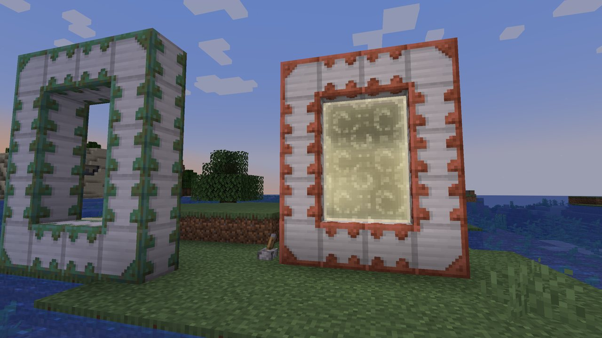
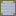
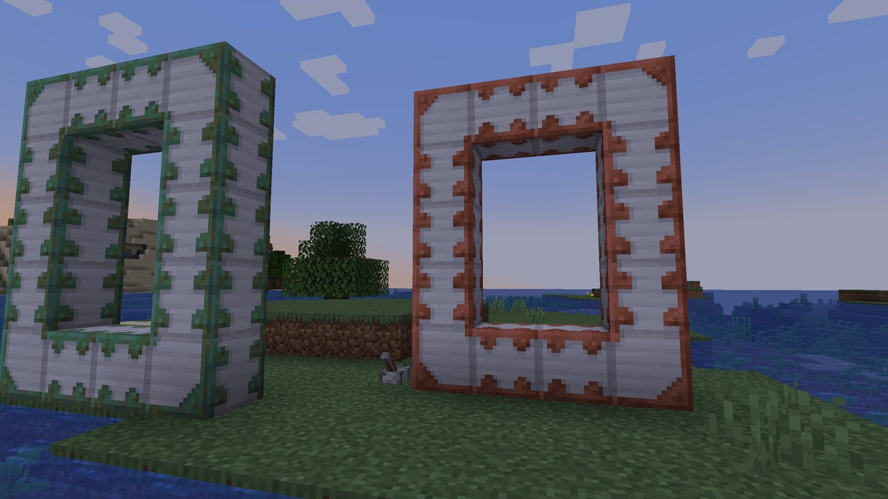
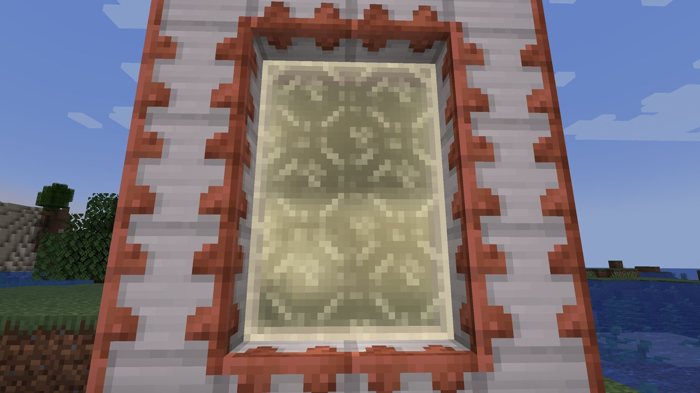
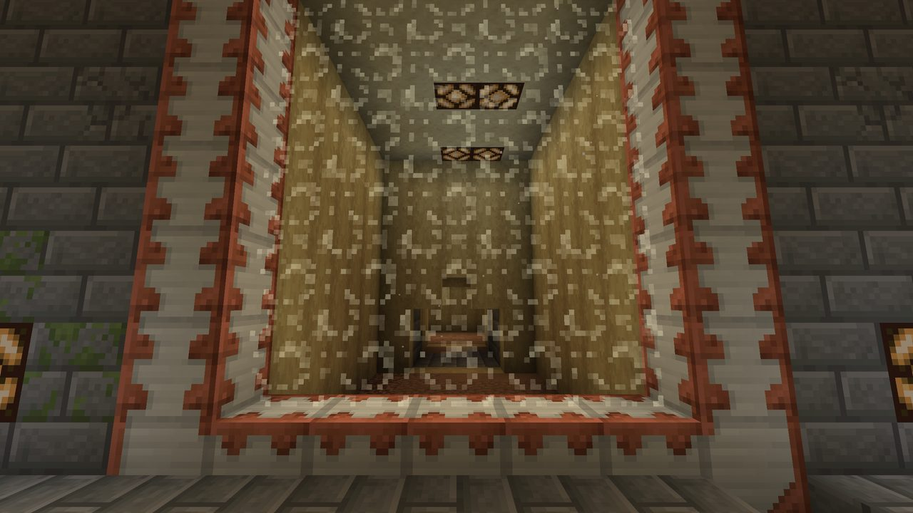
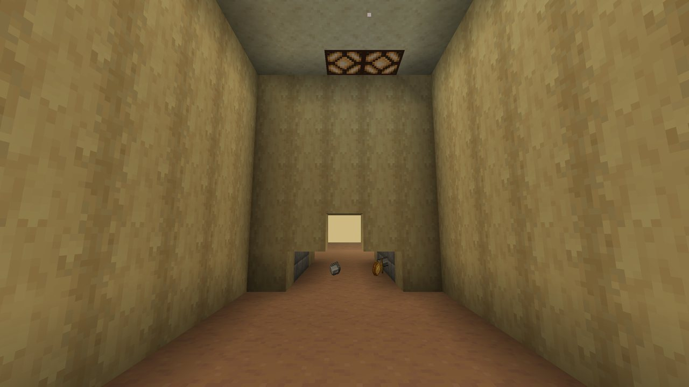
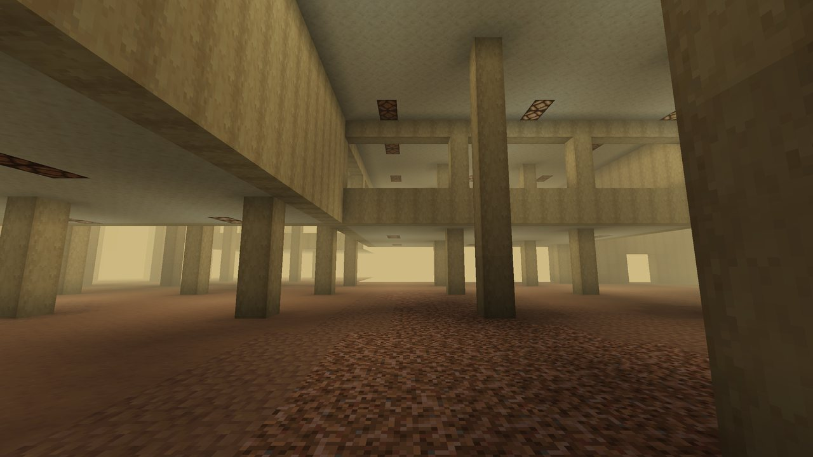
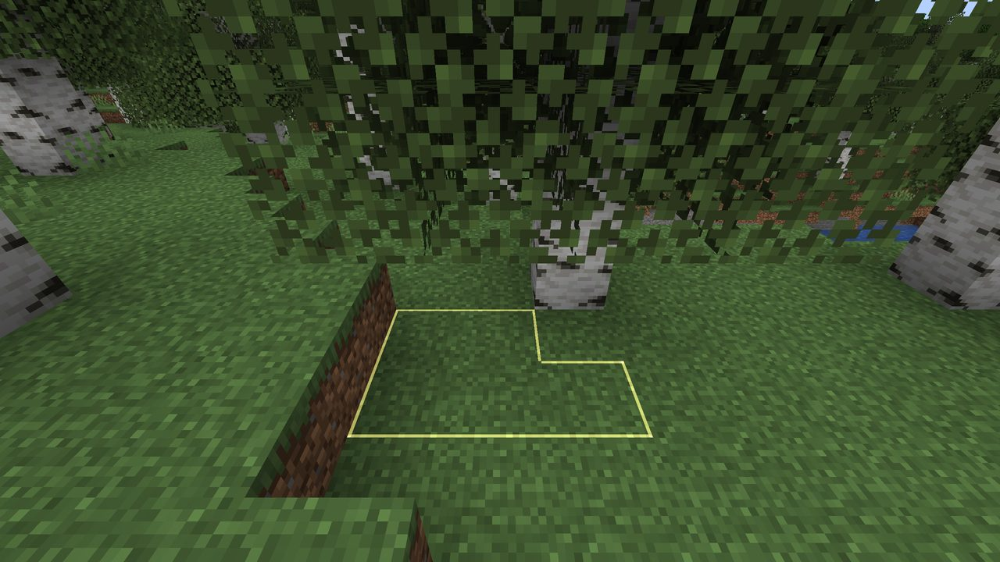
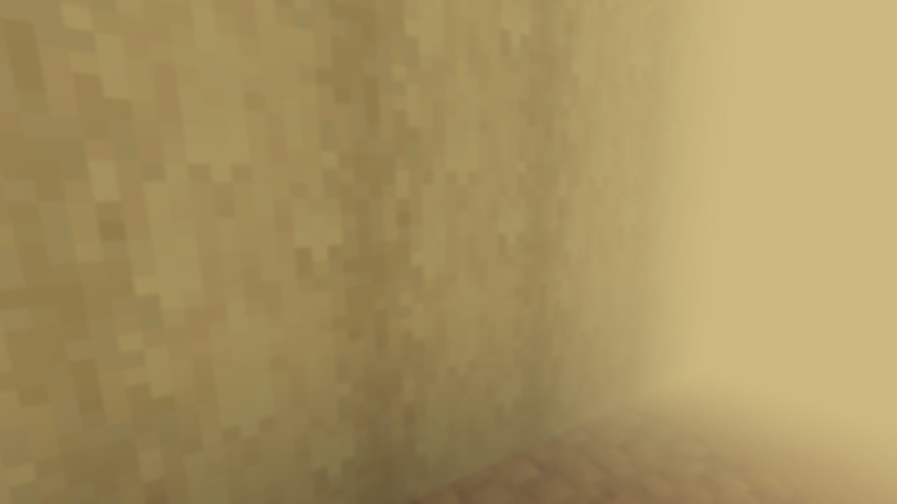
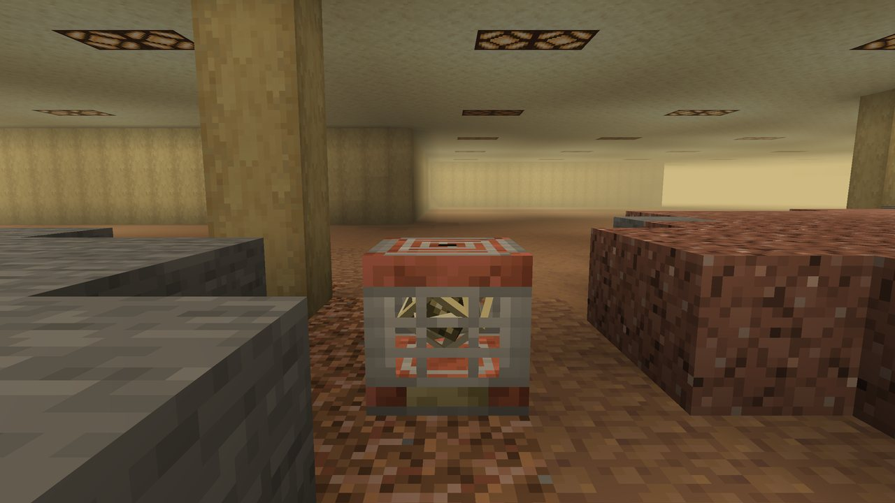

Home » Start » Getting In
Getting In
There are two ways in: a door of Reinforced Iron you power with redstone, and the thin spots that open up in the world after the first door does.

Reinforced Iron#

- Mine it with an iron pickaxe or better. It never drops itself: it breaks into 2 iron ingots, 2 copper ingots and sometimes the block of iron.
- It weathers like vanilla copper: exposed, weathered, oxidized. Honeycomb waxes it to keep the stage, an axe scrapes a stage off.
- The blocks of a closed frame join up: posts, beams and corners take their own textures.

Building a door#
- Build a closed frame of Reinforced Iron around an empty opening, like a Nether portal frame. Any shape works, with an opening up to 21 by 21. The frame must be unbroken; the corners are up to you, like a Nether portal's.
- Give any block of the frame a redstone signal: a lever, a button, a Block of Redstone beside it, a redstone torch.
- The door kindles for 2.5 seconds: light gathers round the inside of the frame and flickers on like a fluorescent tube on redstone power, with a rising power-up sound, then it opens with a deep boom.
- Cut the power and the door closes again. Break the frame and it goes out.
The view is ready before you open it
As soon as a frame is whole, the door already holds a picture of the room you will arrive in, so it opens straight onto the other side with no waiting. Change the room and the picture follows. Break the frame and the picture is thrown away.


Crossing#
Walk into the open door and you are on the other side on the next tick, with no loading screen: the game holds its last picture until the new room has drawn.
Each time an overworld door opens, the 25 by 25 room around it is copied into The Remembering at the same coordinates, lifted a little so its floor meets one of the dimension's floors, and a twin door opens there. Walk through and the room is the same room. Walk out of it and it isn't.


- The twin door inside The Remembering stays open on its own: the memory holds it open, not power.
- If you walk in during the first seconds after it opens, while the room is still being copied, nothing happens until the copy is there. Then you go through.
- The Remembering also remembers which door you came in by. The Keeper sometimes drags people back to it, and
/backrooms leaveuses it.
Doors in every dimension#
Doors work in every dimension, both ways:
- A door in the overworld opens into the overworld floors of The Remembering at the same x, y and z.
- A door in the Nether opens into The Remembering's Nether floors at the same spot. A door in the End opens into its End floors.
- A door built inside The Remembering opens back out onto the world its level remembers: the overworld from the overworld floors, the real Nether from the Nether floors, the real End from the End floors.
No other portals work inside
Nether portals cannot be lit or used inside The Remembering, and neither can End portals. Only its doors work.
Thin spots#
Once the first door in a world opens, the overworld starts wearing thin. Thin spots are patches of ground in the Overworld, Nether and End that look like the block they replaced and hold no weight. They show only as a slightly darker top with a faint dark rim, so the patch looks like a shallow dip.
- Step onto one and you drop through into The Remembering at the same spot, with the Distorted effect: a blurred, fogged view for a while.
- A thin spot is at least a plus of five blocks. By default about 1 newly loaded chunk in 50 gets one, and the chunks already loaded when the first door opens are rolled too.
- A powered Memory Anchor anywhere in the world stops new thin spots world-wide, and the ones already out there close back into the block they replaced.
- Server owners can switch them off, keep them from starting before the first door, or make them rarer in the config (try
chancePerChunk = 0.005on busy servers).



Getting out#
- Walk back through any open door.
- Build your own door inside: it opens onto the world that level remembers.
- Type
/backrooms leave: anyone can, with a cooldown (10 minutes by default; ops have none). It takes you to the overworld, by the door you came in through if there is one. - Die: you respawn at your spawn point as usual, unless you set your spawn at a charged Stand-In inside.